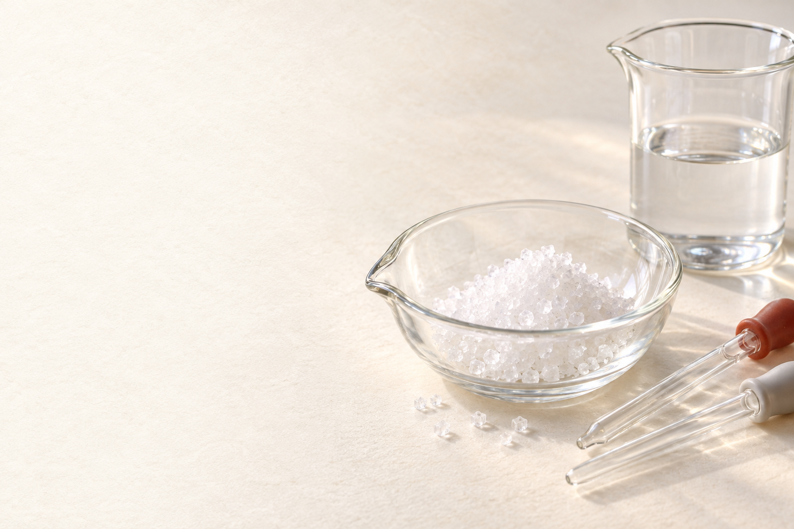

中和と塩
反応後のイオンを数えよう。

黄色の塩酸に、アルカリを加える
塩酸 ＋ BTB

加える前
少量を加えた
過不足なく加えた
さらに加えた
BTBを加えた塩酸 初めは黄色
少し加えても まだ黄色
ちょうどよい量で 緑色
さらに加えると 青色
少量では、酸性のまま。
過不足なく反応すると、中性。
加えすぎると、アルカリ性。
色が変わったとき、水の中では？
塩酸には H⁺とCl⁻
加えた液には Na⁺とOH⁻
H⁺とOH⁻に 注目しよう
2つの液に含まれるイオンを確認。
反応する組合せを調べる。
H⁺とOH⁻が反応すると、水になる
初めの塩酸 H⁺とCl⁻
Na⁺とOH⁻を 加える
H⁺ ＋ OH⁻ → H₂O
Na⁺とCl⁻は 水中に残る
加えたOH⁻が、H⁺と反応する。
H⁺とOH⁻から、 水ができる。
Na⁺とCl⁻は、 イオンのまま残る。
この反応を「中和」という
酸とアルカリを 混ぜると
H⁺ ＋ OH⁻ → H₂O
互いの性質を 打ち消し合う反応 中和
酸とアルカリの反応で、水ができる。
この反応を、中和という。
中和が起きても、中性とは限らない
加える量で 残るイオンが違う
H⁺が余る 酸性
H⁺とOH⁻が 過不足なく反応 中性
OH⁻が余る アルカリ性
途中でも中和は起きている。
過不足なく反応したときが中性。
さらに加えると、OH⁻が余る。
水に溶けたままの「塩」
反応後にも Na⁺とCl⁻が残る
できた塩は 塩化ナトリウム
塩は「えん」 食塩だけではない
中和によって、水と塩ができる。
塩化ナトリウムは、塩の一つ。
全体の反応を、式で表す
塩酸 ＋ 水酸化ナトリウム
水ができる
HCl ＋ NaOH → NaCl ＋ H₂O
H⁺とOH⁻から、水ができる。
できる塩は、NaCl。
水を蒸発させると、塩を取り出せる
水中ではNa⁺とCl⁻が ばらばらに存在
水が蒸発して イオンが近づく
プラスとマイナスが 交互に並ぶ
水がなくなり 食塩の結晶が残る
水が蒸発すると、 イオンどうしが近づく。
Na⁺とCl⁻が引き合い、 規則正しく並ぶ。
結晶になっても、 ＋と−の電荷は残る。
数えるのは、水溶液中のイオン
イオンの総数に 何を数える？
H⁺・OH⁻・Na⁺・Cl⁻ すべて数える
H₂Oは分子 イオンには数えない
符号のある粒子を、1個ずつ数える。
水分子は、イオンの総数に入れない。
H⁺が1個減ると、Na⁺が1個増える
初め：H⁺ 4、Cl⁻ 4 合計8
Na⁺とOH⁻を 1個ずつ加える
H⁺とOH⁻が 水になる
H⁺ 3、Na⁺ 1、Cl⁻ 4 合計8のまま
加えた瞬間は、 イオンが2個増える。
反応によって、 イオンが2個減る。
反応後の総数は、 8のまま。
中性になるまで、総数は変わらない
初めの総数 8
少し加えた後 8
さらに加えた後 8
中性になったとき 8
H⁺は減り、Na⁺は増える。
Cl⁻は、4個のまま。
中性でも、イオンは残る。
中性になった後は、総数が増える
中性のとき Na⁺4 ＋ Cl⁻4 ＝ 8
さらに1組加える 合計10
さらに1組加える 合計12
H⁺がないので、 加えたOH⁻が余る。
Na⁺とOH⁻が、 両方増える。
個数の変化を、表にまとめる
| 加えた量(mL) | 0 | 5 | 10 | 15 | 20 | 25 | 30 |
|---|---|---|---|---|---|---|---|
| H⁺ | 4 | 3 | 2 | 1 | 0 | 0 | 0 |
| OH⁻ | 0 | 0 | 0 | 0 | 0 | 1 | 2 |
| Na⁺ | 0 | 1 | 2 | 3 | 4 | 5 | 6 |
| Cl⁻ | 4 | 4 | 4 | 4 | 4 | 4 | 4 |
| 総数 | 8 | 8 | 8 | 8 | 8 | 10 | 12 |
H⁺とNa⁺を、対にして見る。
Cl⁻とOH⁻の違いを確認。
すべて足すと、総数になる。
H⁺とOH⁻のグラフ
一定の濃さのNaOHを 加えていく
H⁺は減り 20mLで0
OH⁻は20mLを 超えると増える
H⁺が残る間、OH⁻は反応する。
H⁺を使い切った後、OH⁻が余る。
Na⁺とCl⁻のグラフ
反応しない イオンの数は？
Na⁺は 加えるほど増える
Cl⁻は 初めから4で一定
Na⁺は、加えた液から入ってくる。
Cl⁻は、反応せず水中に残る。
イオンの総数は、どんなグラフ？
4種類の数を すべて足す
中性になるまで 8で一定
中性になった後 増えていく
減ったH⁺の分だけ、Na⁺が増える。
その後はNa⁺とOH⁻が両方増える。
確認：25mL加えた後の総数は？
20mLで中性。 25mLでは？
Na⁺5、Cl⁻4 OH⁻1
合計10
Na⁺とCl⁻だけで数え終わらない。
余ったOH⁻も、1個数える。
水で薄めたら、必要な量は変わる？
同じ塩酸に 水だけを加える
H⁺の総数は 変わらない
中和に必要な NaOH水溶液の量も 変わらない
水を加えても、H⁺は増減しない。
加えるNaOHの濃さが同じなら、 必要な体積は同じ。
実験結果から、必要な体積を求める
| 塩酸 | 必要なNaOH水溶液 | |
|---|---|---|
| 実験結果 | 10 mL | 8 mL |
| 同じ液で実験 | 20 mL | ？ |
塩酸10mLに NaOH水溶液8mL
同じ塩酸を 20mLにすると？
必要なNaOHは 16mL
塩酸の濃さも、NaOHの濃さも同じ。
塩酸が2倍なら、必要な量も2倍。
硫酸と水酸化バリウムなら？
硫酸 ＋ 水酸化バリウム水溶液
無色の液どうしを 混ぜると？
白くにごる
白い沈殿は 硫酸バリウム
水に溶けにくい、白い塩ができる。
塩には、沈殿するものもある。
水になるイオン、沈殿になるイオン
水中にある 4種類のイオン
H⁺とOH⁻も Ba²⁺とSO₄²⁻も近づく
水ができるとともに BaSO₄の固体ができる
水に溶けにくい固体が 沈殿として残る
プラスとマイナスの イオンが近づく。
水の生成とともに、 BaSO₄の固体ができる。
水・沈殿になった分は、 水中のイオンに数えない。
硫酸バリウムができる反応式
できるものは 水と白い塩
H₂SO₄ ＋ Ba(OH)₂ → BaSO₄ ＋ 2H₂O
BaSO₄は沈殿 H₂Oは水
水は2個分、塩は1組分できる。
どちらも、水溶液中の イオンの総数には入れない。
沈殿する場合、総数は減っていく
初めのイオン H⁺4、SO₄²⁻2：計6
1組分を加えると 残るイオンは3
過不足なく反応すると 模型上は0
さらに加えると Ba²⁺とOH⁻が残る
水になる分と、 沈殿になる分が減る。
過不足なく反応したとき、 水溶液中のイオンはほぼなくなる。
加えすぎると、 イオンは再び増える。
沈殿する中和の総数グラフ
水溶液中に 残った数を見る
中性になるまで 6 → 3 → 0
その後は 0 → 3 と増える
反応と沈殿で、イオンが減る。
過剰なBa²⁺とOH⁻は、水中に残る。
2つの総数グラフを比べよう
できた塩が、水中に残るかを見る。
「中和なら同じ形」とは限らない。
まとめ：反応後に、何が残った？
粒子を追って 考えよう
H⁺とOH⁻から 水ができる
余ったイオンが 液性を決める
塩が溶けるか沈殿するかで イオン総数が変わる
中和の中心は、 H⁺＋OH⁻→H₂O。
中和が起きても、 必ず中性とは限らない。
水・沈殿を除き、 残ったイオンを数える。